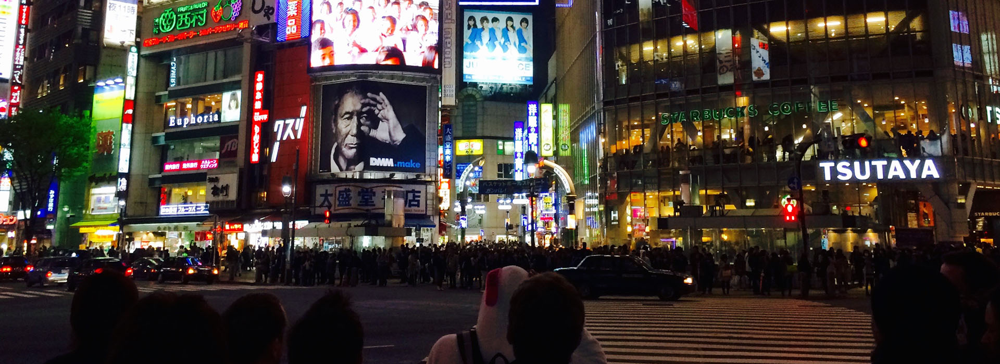
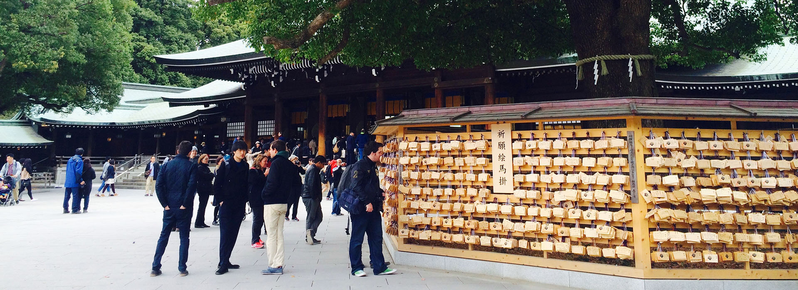
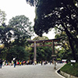
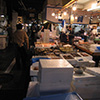

Previous
Next
Toggle navigation
必去景點
必吃美食
推薦住宿
訂購行程
聯絡我們
東京必去景點
上野公園
上野公園，是日本第一座公園，佔地廣大，約53萬平方公尺。每到賞花季節，公園內的櫻花爭相盛開，形成絕美的景色，這裡可說是東京最高人氣的賞花景點！即便不是賞花季節，也很適合來這兒散散步，若是親子旅行，還可以到鄰近的上野動物園走走喔～
晴空塔
東京晴空塔，又稱東京天空樹、新東京鐵塔，是東京最高的建築物，也是東京的新地標。登上距離地面350公尺高的塔頂，白天能俯瞰整個東京市區，晚上能欣賞繁華的東京夜景！除此之外，塔內還有好多好吃、好逛的小店，絕對可以讓人耗一整天啊！
秋葉原
秋葉原是以秋葉原車站為中心，以大量電器賣場、商城與資訊產業企業聚集而聞名的電子商圈。在這裡除了琳琅滿目的電器用品，還有許多動漫的周邊商品、經典模型，是喜愛日本動漫文化的旅客絕不錯過的聖地。

明治神宮
為悼念明治天皇與昭憲皇太后，於1920年創建的神社。在創建時，由日本全國進獻約10萬株樹木組成，是一處人工樹林，也是東京市中心除了皇居之外最大的一塊綠地。每年初次參拜的人數為日本首位。
表參道
原宿表參道、竹下通一帶為著名的逛街聖地，表參道聚集許多國際知名品牌，竹下通則販賣時下流行的衣物與飾品，想體驗日本流行文化，絕對要來這裡好好逛逛。
東京迪士尼樂園
大朋友小朋友最愛去的地方！東京迪士尼分成東京迪士尼樂園和東京迪士尼海洋兩大主題樂園，園區內好玩的遊樂設施玩一整天還嫌不夠，有時間的旅客還可選擇在園區內住宿，好好體驗這個實現愛與夢想的夢幻國度。
東京必去景點
東京必吃美食
東京推薦住宿
立即訂購行程
實用連結
東京的官方觀光網站
日本政府觀光局
東京Metro地鐵官方網站
JR東日本
背包客棧
東京熱門
東京迪士尼樂園
499
晴空塔
352

築地市場
332
新宿つな八
318
品川王子大飯店
225
表參道
159
上野三井花園酒店
144
×
Close
詳細資訊
Previous
Next
電話：
地址：
營業時間
：